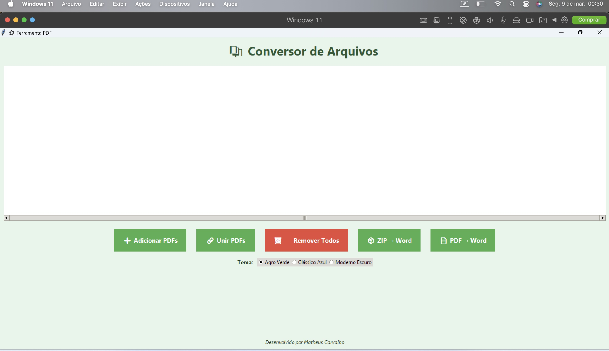
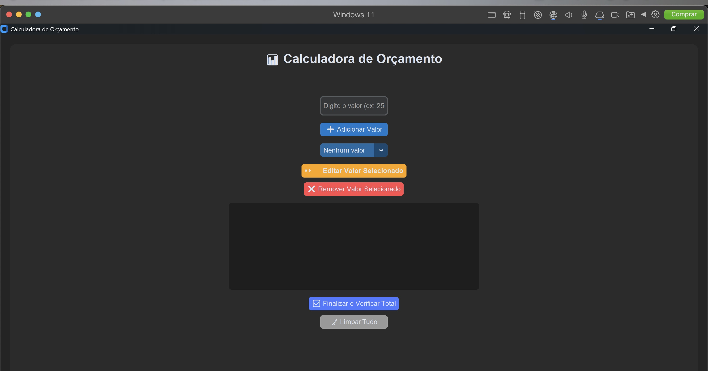
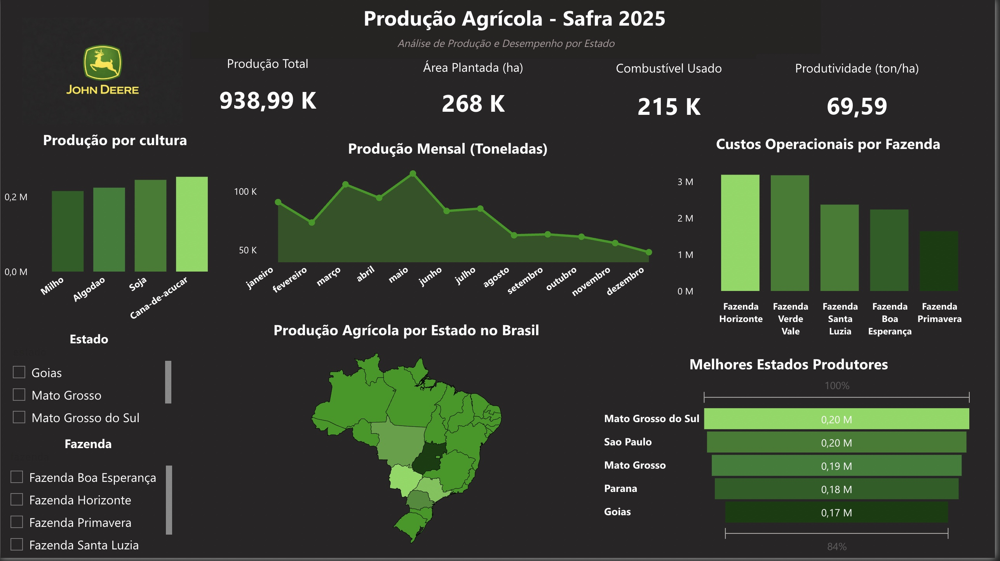
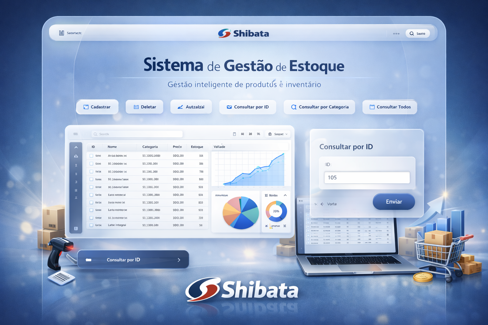
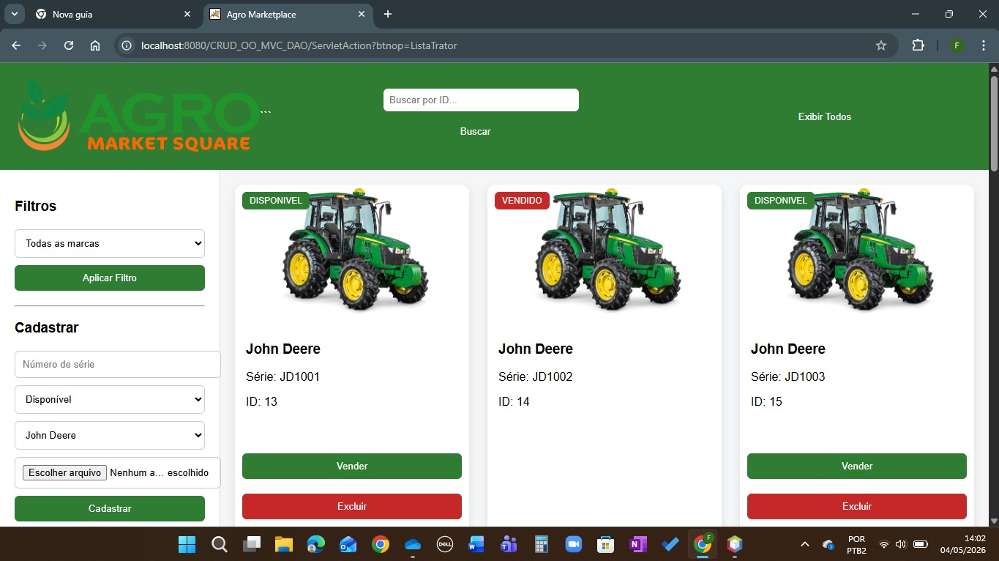
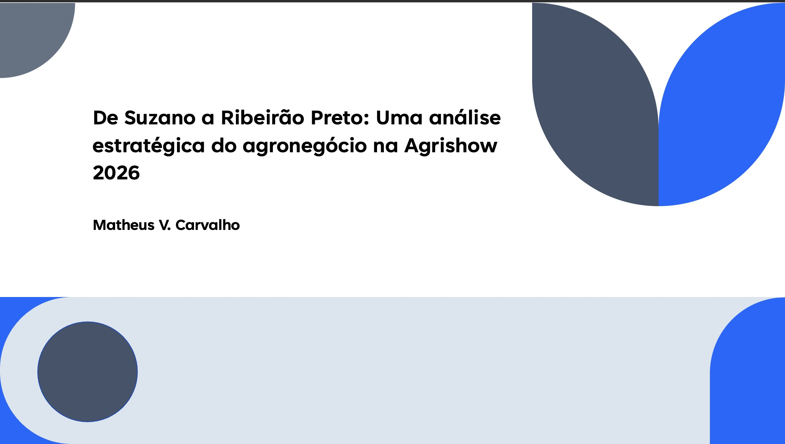
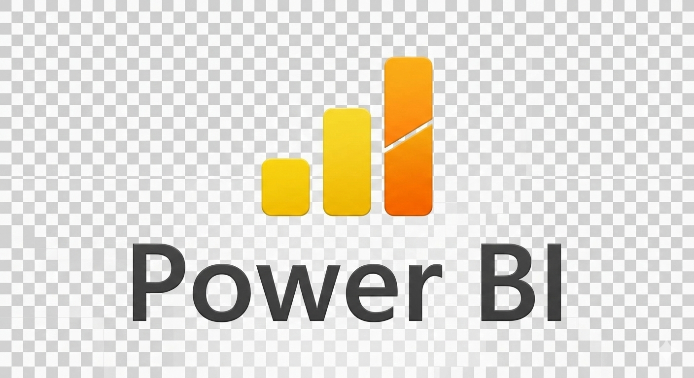

Projetos

Conversor de arquivos multifuncional inspirado no SmallPDF, permitindo transformar PDFs em Word, Excel, além de manipular arquivos ZIP. O sistema possui interface moderna, temas personalizados e foco em produtividade.
Ver no GitHub
Sistema de orçamento automotivo integrado com Cilia e Audatex, permitindo cálculo automático de valores, análise percentual e organização de serviços. Desenvolvido com foco em agilidade e clareza para o usuário.
Ver no GitHub
Dashboard de vendas inspirado na John Deere, com foco em análise de desempenho de máquinas agrícolas, ranking Top 5, indicadores de faturamento e visual moderno voltado ao agronegócio.
Ver no GitHub
Sistema de Gestão de Estoque desenvolvido em Java com operações completas de CRUD (cadastro, consulta, atualização e exclusão). O sistema possui integração com banco de dados e foco em organização e controle de produtos.
Ver no GitHub
Sistema web para gestão de uma pequena concessionária de tratores, desenvolvido com arquitetura MVC e padrão DAO. Permite controle de estoque, status de vendas e organização de máquinas agrícolas.
Ver no GitHub
Apresentação com análises e insights da Agrishow 2026, explorando tendências, tecnologia e uso de dados no agronegócio.
Ver no GitHubFerramentas

